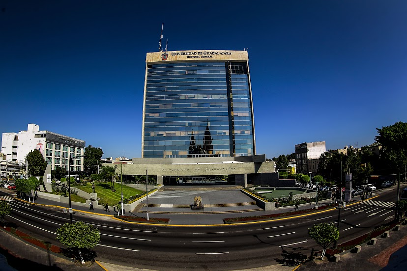
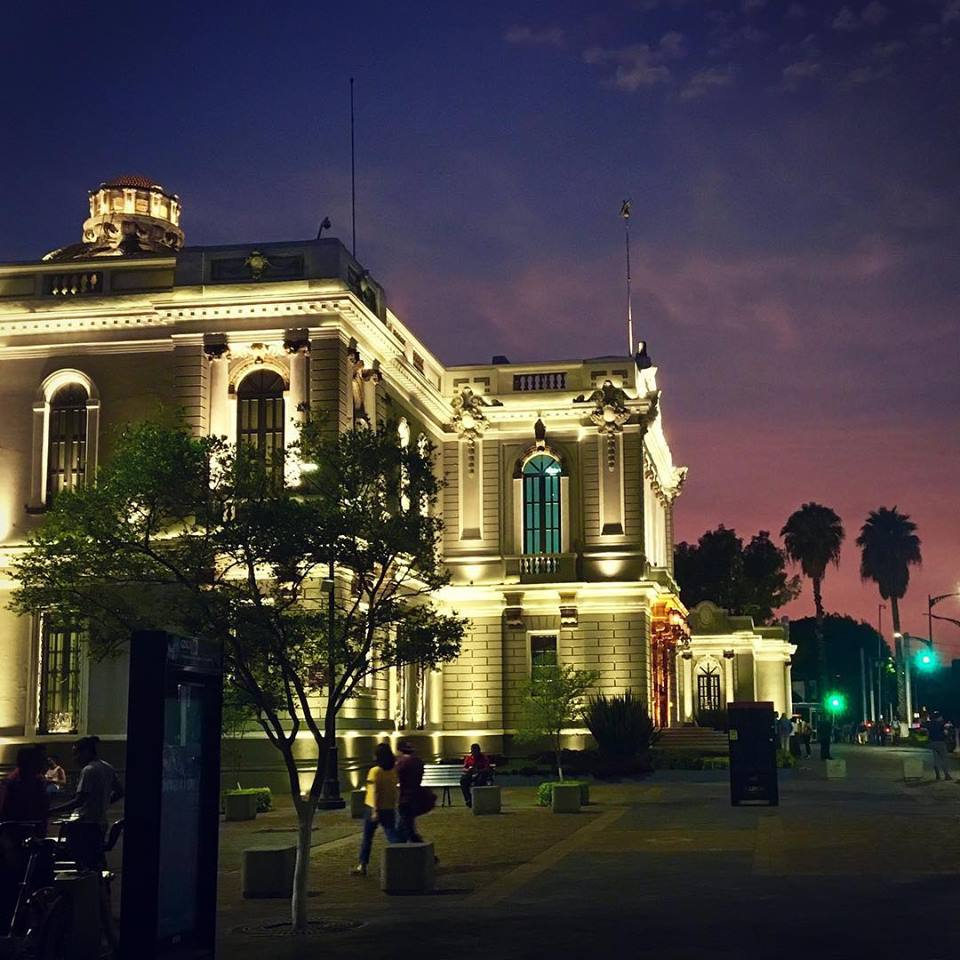
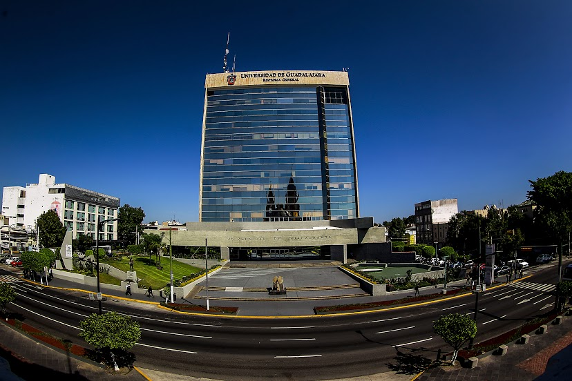
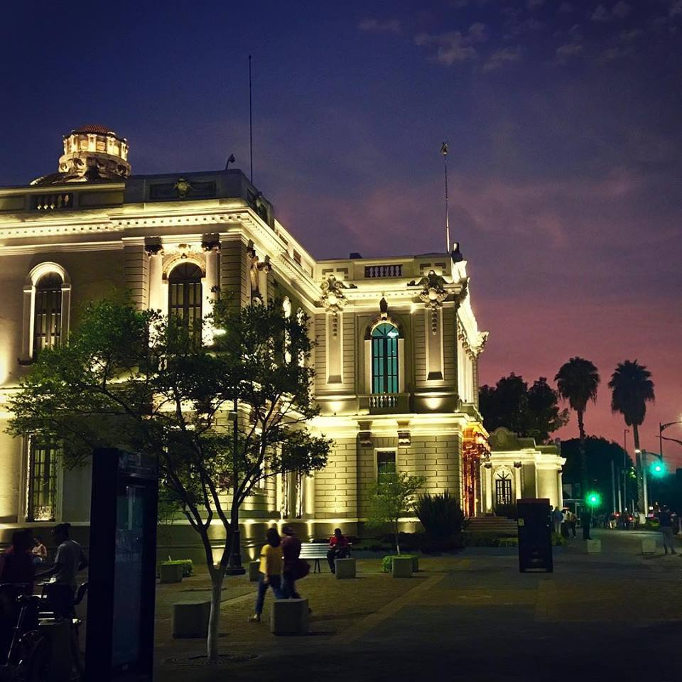

Universidad Nacional Autónoma de México (UNAM)
Requisitos
1Cursar la mitad de la carrera
La UNAM pide haber cursado por lo menos el 44% de los creditos de tu plan de estudios en la universidad de origen.
2Promedio
Contar con un promedio minimo de 8.0/10, o el requerido por la escuela o facultad correspondiente.
3Ser estudiante regular
Debes de ser estudiante regular de tu universidad de origen y estar inscrito en el Departamento de escolar y archivo, así como en tu dependencia durante el periodo en que realices la solicitud y movilidad.
4Entregar en tiempo y forma
Entregar en tiempo y forma la documentación completa para participar en el programa de movilidad academica.
5Presentar documentacion requerida.
°CURP.
°INE.
°Carta de postulación de tu institucion de origen.
°Carta compromiso.
°Programa academico a cursar en la UNAM.
°Kardex(certificado).
°copia CURP.
°Copia de identificacion oficial.
UNAM


Universidad de Guadalajara
Requisitos
1Ser estudiante regular
Se requiere ser un estudiante regular en tu institucion de origen.
2Promedio
Contar con un promedio general minimo de 80% de los creditos en tu plan de estudios actual.
3Completar el registro en linea
Se debe de registrar dentro de las fechas establecidas del registro de solicitud.
4Presentar la documentacion requerida
°Carta de postulación.
°Plan de estudios que planeas cursar.
°copia de identificacion oficial.
°Historial academico.
°Fotografia reciente tamaño pasaporte.
°Comprobante de seguro medico con cobertura Internacional.
°Carta de exposicion de motivos por los cuales deseas la estancia.
5Creditos
Haber acreditado como minimo el 50% total de los creditos del programa educativo en el que se encuentra insctiro.
6Contar con un seguro médico
Tener seguro medico que tenga cobertura en México durante el periodo de la estancia.
UDG
 



Benemérita Universidad Autónoma de Puebla (BUAP)

Requisitos
1Estudiante regular
Ser un estudiante regular de la universidad de origen.
2cursar la mitadd de la carrera
Haber cursado y aprobado al menos el 50% de los creditos de la carrera.
3promedio
Contar con un promedio general mínimo de 85% en la carrera que estas cursando.
4Documentación
°Formato de solicitud con fotografia.
°Carta de motivo dirigida a la universidad.
°Carta compromiso.
°currículum vitae.
°Kardex.
°Copia de identificación oficial.
°Copia CURP.
°Formato de ravalidación de unidades de aprendizaje firmado por la comision académica de la dependecia.
5Si es aceptado se debe entregar la siguiente documentación:
°Carta de buena salud(exámenes medicos generales).
°Estudio psicológico.
BUAP


Universidad autónoma de Yucatán (UADY)
Requisitos:
1Ser estudiante regular
Se requiere ser un estudiante regular en tu institucion de origen.
2creditos
Haber acreditado el 50% del total de créditos del programa educativo en el que se encuentra inscrito.
3Promedio
Promedio General mínimo de 80% en el plan que cursas.
4Documentación
°Formato de solicitud generado al momento de realizar el registro en el sistema de movilidad.
°carte de exposición de motivos.
°Historial academico.
°Carta compromiso.
°Copia de CURP.
°Copia de identificación oficial.
°Comprobante de seguro médico.
°Formato de homologación de asignaturas.
°Carta de exposicion de motivos por los cuales deseas la estancia.
5Seleccionar una institucion receptora
Hay que seleccionar una institucion la cual tenga convenio de movilidad en la UADY.
5Seguro medico
Tener seguro medico que tenga cobertura en México durante el periodo de la estancia.

UADY